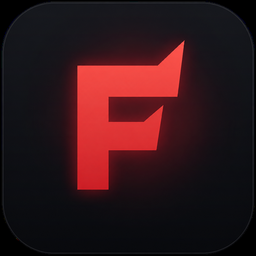

FireClient (Fire Client) docs and download
Minecraft, Your Way. Download, install and set up the free FireClient launcher and in-game client.
FireClient (also written Fire Client) is a free Minecraft launcher and in-game client in one install. It handles Java, game versions, mod loaders and updates, then gives you a menu and a HUD once you are in the game.
These docs cover the whole thing, from your first install to hosting a server. Pick the path that fits you.
Start here#
What FireClient does#
- Launcher. Home, Versions, Worlds, Servers, Host Server, Screenshots, Accounts and Skins pages in one sidebar.
- Versions and Java. Installs Minecraft versions and the Java runtime each one needs. Supports Fabric, Forge and NeoForge.
- Mods. Search Modrinth, drop in your own jar files, and install packs for Performance, Visuals, Utility and PvP.
- In game. A custom title screen, a FireClient menu on Right Shift, and a HUD with 11 elements.
- Your files. Everything lives in one
.fireclientfolder. Uninstalling leaves worlds and game data alone.
Project status#
FireClient is in early access. The full version is planned for November 2026, and dates can move. See the roadmap for what is planned and what is already built.
Note: FireClient is independent. It is not affiliated with or endorsed by Mojang or Microsoft. These pages were checked against fireclient.net and the FireClient GitHub repositories on 4 November 2026.